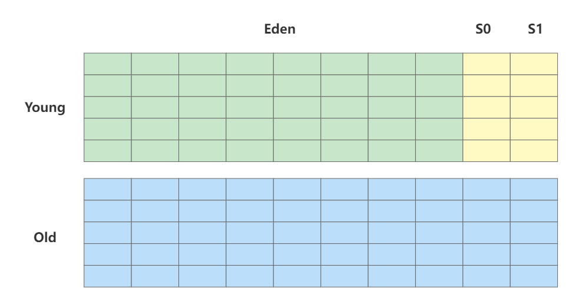
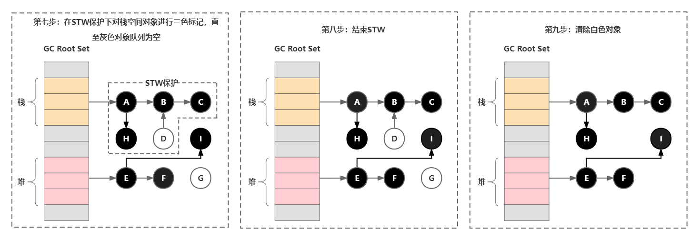
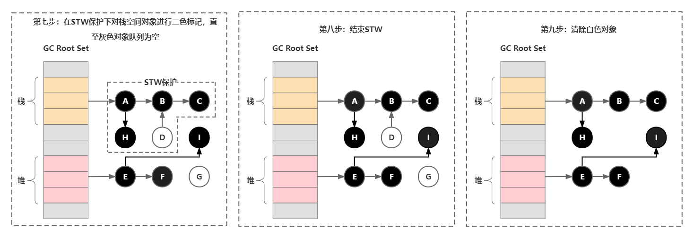
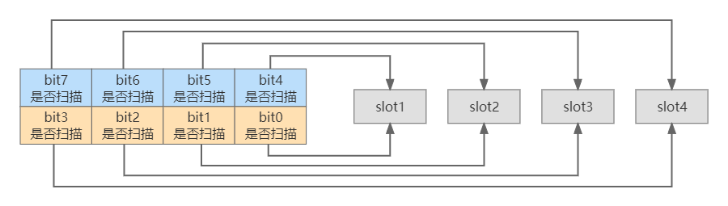
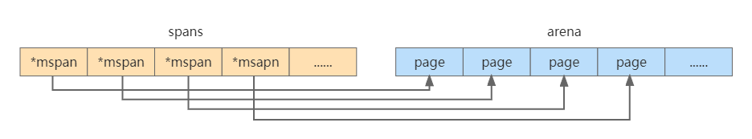

Golang垃圾回收机制
Table of Contents
垃圾回收概念
程序创建对象等引用类型实体时会在虚拟内存中分配给它们一块内存空间，如果该内存空间不再被任何引用变量引用时就成为需要被回收的垃圾。操作系统会记录一个进程运行时的所占用的内存、CPU和寄存器等资源，当进程结束后便由操作系统能够自动回收资源。但是对于一个运行较长时间的程序，如果使用完内存资源后没有及时释放就会造成内存泄漏甚至系统错误。
以不支持自动垃圾回收的
void foo() { char *p = new char[128]; // 对指针的使用 delete[] p; // delete语句释放对象数组 }
如果由于异常或者其他原因导致 delete 语句没有正常执行，且该函数被频繁调用，那么很容易占用所有系统内存从而导致程序崩溃，如果泄漏的是系统资源的话甚至还会导致系统崩溃。另一方面如果我们在不该释放内存的时候释放内存，那么仍然在使用这块内存的指针就会变成野指针
由于
int *p = new int; p += 10; // 指针偏移, 原来p指向的内存不再被引用 // 原来p指向的内存可能被回收 p -= 10; // 偏移为指针p初始指向的位置 *p = 10; // 如果p指向的内存被回收的话, 那么这里就会出现野指针的问题
由于
1. 垃圾回收过程
用户程序
2. 自动垃圾回收与手动垃圾回收
malloc 和 free 手动向操作系统申请和释放内存，这种自由管理内存的方式给予程序员极大的自由度，但是也相应地提高了对程序员的要求。
- 函数体内的局部变量：在栈上创建，函数作用域结束后自动释放内存
- 静态变量：在静态存储区域上分配内存，整个程序运行结束后释放（全局生命周期）
- 动态分配内存的变量：在堆上分配，通过
malloc申请，free释放
3. 垃圾回收目标
垃圾回收器主要包括三个目标：
- 无内存泄漏：垃圾回收器最基本的目标就是减少防止程序员未及时释放导致的内存泄漏，垃圾回收器会识别并清理内存中的垃圾
- 自动回收无用内存：垃圾回收器作为独立的子任务，不需要程序员显式调用即可自动清理内存垃圾
- 内存整理：如果只是简单回收无用内存，那么堆上的内存空间会存在较多碎片而无法满足分配较大对象的需求，因此垃圾回收器需要重整内存空间，提高内存利用率
常见的垃圾回收算法
根据判断对象是否存活的方法，可以简单将
GC 算法分为“引用计数式”垃圾回收和“追踪回收式”垃圾回收。前者根据每个对象的引用计数器是否为0来判断该对象是否为未引用的垃圾对象，后者先判断哪些对象存活，然后将其余的所有对象作为垃圾进行回收。追踪回收本身包括标记-清除Mark-Sweep 、标记-复制Mark-Copy 和标记-整理Mark-Compact 三种回收算法。
1. 引用计数
引用计数 std::shared_ptr 等。
以
typedef struct_object { int ob_refcnt; struct_typeobject *ob_type; } PyObject;
其中 ob_refcnt 为引用计数器，当一个对象有新的引用时计数器增一，当引用它的对象被删除时计数器减一。
引用计数法优点包括：
- 原理和实现都比较简单
- 回收的即时性：当对象的引用计数为0时立即回收，不像其他
GC 机制需要等待特定时机再回收，提高了内存的利用率 - 不需要暂停应用即可完成回收
缺点包括：
- 无法解决循环引用的回收问题：当
ObjA 引用了ObjB ，ObjB 也引用ObjA 时，这两个对象的引用次数使用大于0 ，从而占用的内存无法被回收 - 时间和空间成本较高：一方面是因为每个对象需要额外的空间存储引用计数器变量，另一方面是在栈上的赋值时修改引用次数时间成本较高（原本只需要修改寄存器中的值，现在计数器需要不断更新因此不是只读的，需要额外的原子操作来保证线程安全）
- 引用计数是一种摊销算法，会将内存的回收分摊到整个程序的运行过程，但是当销毁一个很大的树形结构时无法保证响应时间
2. 追踪基础：可达性分析算法
尽管前面提到的三种追踪式垃圾回收算法实现起来各不相同，但是第一步都是通过可达性分析算法标记 Mark 对象是否“可达”。一般可到达的对象主要包括两类：
GC Root 对象：包括全局对象、栈上的对象（函数参数与内部变量）- 与
GC Root 对象通过引用链Reference Chain 相连的对象
对于“不可达”的对象，我们可以认为该对象为垃圾对象并回收对应的内存空间。
可达性算法中判断对象是否“可达”依赖于“引用”的定义，
- 强引用
Strong Reference ：使用Object obj = new Object()定义的引用，这类对象无论在什么情况下都不会被垃圾回收机制清理掉 - 软引用
Soft Reference ：用于描述有用但非必需的对象，只有在内存不足的时候才会回收该对象，适合实现内存敏感的高速缓存（网页缓存和图片缓存等）；软引用可以和引用队列ReferenceQueue 一起使用，当软引用所引用的对象被回收时JVM 会把这个软引用加入到与之关联的引用队列，GC 线程会在抛出OOM 错误前根据引用队列来回收长时间闲置不用的软引用对象 - 弱引用
Weak Reference ：用于描述非必需对象，在JVM 进行垃圾回收时会直接回收被弱引用关联的对象，同软引用相比有更短的生命周期 - 虚引用
Phantom Reference ：一个对象与虚引用关联时在任何时候都可以被垃圾回收器回收，因此并不会影响该对象的生命周期，主要用于跟踪对象被GC 回收的活动；虚引用必须和引用队列联合使用，当回收一个对象时如果发现它还有虚引用，就会在回收对象的内存之前将这个虚引用加入到与之关联的引用队列中，这样程序可以通过判断引用队列是否加入虚引用来判断被引用的对象是否将进行垃圾回收
| 引用类型 | 回收时机 | 用途 | 生存周期 |
|---|---|---|---|
| 强引用 | 从不回收 | 对象的一般状态 | |
| 软引用 | 内存不足时 | 对象缓存 | 内存不足时终止 |
| 弱引用 | 正常垃圾回收时 | 对象缓存 | 垃圾回收后终止 |
| 虚引用 | 正常垃圾回收时 | 跟踪对象的垃圾回收 | 垃圾回收后终止 |
同引用计数法相比，追踪式算法具有如下优点：
- 解决了循环引用对象的回收问题
- 占用空间更少
缺点包括：
- 同引用计数相比无法立刻识别出垃圾对象，需要依赖
GC 线程 - 算法在标记时必须暂停整个程序，即
Stop The World, STW ，否则其他线程的代码会修改对象状态从而回收不该回收的对象
3. 标记-清除算法
标记-清除
- 标记：记录需要回收的垃圾对象
- 清除：在标记完成后回收垃圾对象的内存空间
优点包括：
- 算法吞吐量较高，即运行用户代码时间 / （运行用户代码时间 + 运行垃圾收集时间）较高
- 空间利用率高：同标记-复制相比不需要额外空间复制对象，也不需要像引用计数算法为每个对象设置引用计数器
缺点包括：
- 清除后会产生大量的内存碎片空间，导致程序在运行时可能没法为较大的对象分配内存空间，导致提前进行下一次垃圾回收
4. 标记-复制算法
标记-复制

优点包括：
- 标记-清除法需要在清除阶段对大量垃圾对象进行扫描，标记-复制则只需要从
GC Root 对象出发，将“可到达”的对象复制到另一块内存后直接清理当前这块的内存，因此提升了垃圾回收的效率 - 解决了内存碎片化的问题，防止分配较大连续空间时的提前
GC 问题
缺点包括：
- 同标记-清除法相比，在“可达”对象占比较高的情况下有复制对象的开销
- 内存利用率较低，相当于可利用的内存仅有一半
5. 标记-整理算法
标记-整理
优点包括：
- 避免了内存碎片化的问题
- 在对象存活率较高的情况下，标记-整理算法由于不需要复制对象效率更高，因此更加适合老年代算法
缺点包括：
- 整理过程较为复杂，需要多次遍历内存导致
STW 时间比标记-清除算法更长
6. 三色标记法
前面提到的“标记”类算法都有一个共同的瑕疵，即在进行垃圾回收的时候会暂停整个程序（
- 白色：未搜索的对象，
gcmarkBits 对应位为0 ，在回收周期开始时所有对象都是白色，在回收周期结束时所有的白色都是垃圾对象 - 灰色：正在搜索的对象，还在标记队列中等待，且对象身上还有零个或多个引用没有扫描
- 黑色：已搜索完的对象，
gcmarkBits 对应位为1 ，该对象不会在本次GC 中被回收
三色标记法属于 增量式
具体的实现如下：
- 初始时所有对象都是白色对象
- 从
GC Root 对象出发，扫描所有可达对象并标记为灰色，放入待处理队列 - 从队列取出一个灰色对象并标记为黑色，将其引用对象标记为灰色放入队列
- 重复上一步骤，直到灰色对象队列为空
- 此时所有剩下的白色对象就是垃圾对象
- 全局变量：程序在编译期就能确定的那些存在于程序整个生命周期的变量。
- 执行栈：每个
goroutine 都包含自己的执行栈，这些执行栈上包含栈上的变量及指向分配的堆内存区块的指针。 - 寄存器：寄存器的值可能表示一个指针，参与计算的这些指针可能指向某些赋值器分配的堆内存区块。
优点：
- 不需要暂停整个程序进行垃圾回收
缺点：
- 如果程序垃圾对象的产生速度大于垃圾对象的回收速度时，可能导致程序中的垃圾对象越来越多而无法及时收集
- 线程切换和上下文转换的消耗会使得垃圾回收的总体成本上升，从而降低系统吞吐量
7. 分代收集算法
前面提到追踪式垃圾回收算法一个显著的问题是会频繁扫描生命周期较长的对象，而内存分配存在一个
- 使用分代收集算法的代表语言：Java。
- 优点：回收性能好
- 缺点：算法复杂
7.1 分代收集算法的三个假设
- 弱分代假说：大多数对象的生命周期都很短
- 强分代假说：多轮垃圾回收都没清理掉的对象往往不容易死亡
- 跨代引用假说：跨代引用和同代引用相比仅占一小部分
7.2 新生代分区和老年代分区
分代收集算法会将对象按照生命周期的长短划分到不同的分区。对于生命周期短的新生代区域，每次回收仅需要考虑如何保留少量的存活对象，因此可以采用标记-复制算法完成
分代收集算法首先会根据对象的生命周期将内存划分为
Young 和Old 两块大区域。由于新生代中的对象生命周期较短（每次回收约98% 的对象是垃圾对象），再加上新生代采用标记-复制法需要两块内存交替使用，Young 区为了节省复制算法的内存代价又划分成Eden 、Survivor0 和Survivor1 三个分区（内存分配比例为8:1:1 ）。另外，我们没法保证Young 区每次回收都仅有10% 不到的对象存活，因此当Survivor 区空间不够时需要放到Old 区，而且大对象需要直接进Old 区。
由于堆分为
7.3 对象的分配策略
- 对象优先在
Yonug 上的Eden 区域分配 - 大对象直接进入
Old 区：主要是因为我们没法保证Young 区每次回收都仅有10% 不到的对象存活，因此标记-复制法下Survivor 难以回收较大的对象 - 新生代中生命周期较长的对象在
Survivor 区每熬过因此Minor GC 就会增加一岁，年龄增加到一定阈值时就进入老年代
7.4 分代算法的大体流程
假设一开始
- 新分配的对象优先存放在
Eden 区（大对象直接进入Old 区） Eden 区满了之后开始进行Minor GC ，将Eden 中存活的对象移动到Survivor0 区，直接清空Eden 区Eden 区第二次满了之后进行Minor GC ，将Eden 和Survivor0 中存活的对象复制到Survivor1 区，清空Eden 和Survivor0 区- 若干轮
Minor GC 过后，此时新生代中生命周期较长的对象熬过了一定次数的Minor GC 晋升成老年代移动到Old 区，某轮Minor GC 存活率较高Survivor 区空间不足时也会将存活对象放到Old 区 - 当
Old 区满了之后进行Major GC
读写屏障技术
1. 三色标记法的并发性问题
假设三色标记法执行前，包含如下对象：
则三色标记法的具体执行过程如下：
上述三色标记执行过后堆内存中白色对象（只有
2. 并发问题原因及解决思路
假设三色标记法和用户程序并发执行，那么下列两个条件 同时满足 就可能出现错误回收非垃圾对象的问题：
- 条件1：某一黑色对象引用白色对象
- 条件2：对于某个白色对象，所有和它存在可达关系的灰色对象丢失了访问它的可达路径
简单证明一下：如果条件1不满足，那么任何不该被回收的白色对象都能和至少一个灰色对象存在“可达”路径，因此不会有白色对象被遗漏；如果条件2不满足，那么对于某一个白色对象，即使它被黑色对象引用，但至少存在一个和它存在可达关系的灰色对象，因此这个白色对象也不会被回收。
一句话总结即是：在三色标记法执行的某个特定时机，只要存在未经访问的能够到达白色对象的可达路径，就可以令黑色对象引用白色对象，反正该白色对象在后面标记中会被识别为“可达”对象从而不会被错误回收。
一种最简单解决三色标记并发问题的方法是停止所有的赋值器线程，保证标记过程不受干扰，即垃圾回收器中常提到的
3. 读写屏障技术
屏障技术：给代码操作内存的顺序添加一些限制，即在内存屏障前执行的动作必须先于在你内存屏障后执行的动作。
使用屏障技术可以使得用户程序和三色标记过程并发执行，我们只需要达成下列任意一种三色不变性：
- 强三色不变性：黑色对象永远不会指向白色对象
- 弱三色不变性：黑色对象指向的白色对象至少包含一条由灰色对象经过白色对象的可达路径
我们讲内存屏障技术解决了三色标记法的STW缺点，并不是指消除了所有的赋值器挂起问题。需要分清楚STW方法是全局性的赋值器挂起而内存屏障技术是局部的赋值器挂起。
4. Dijkstra 插入写屏障 - 灰色赋值器
// 添加下游对象的函数, 当前下游对象slot, 新下游对象ptr func DijkstraWritePointer(slot *unsafe.Pointer, ptr unsafe.Pointer) { // 1) 将新下游对象标记为灰色 shade(ptr) // 2) 当前下游对象slot = 新下游对象ptr *slot = ptr } // 场景一：A之前没有下游, 新添加一个下游对象B, B被标记为灰色 A.DijkstraWritePointer(nil, B) // 场景二：A将下游对象C更换为B, B被标记为灰色 A.DijkstraWritePointer(C, B)
一个对象可以存储在内存中的“栈”或者“堆”，由于“栈”空间容量小且要求相应速度较高，因此“插入写屏障”不适合用于“栈”空间。在“插入写屏障”保护下的三色标记法执行例子如下：
 

- 第一步：垃圾回收之前将所有的对象标记为白色
- 第二步：遍历
GC Root Set ，将可达对象标记为灰色 - 第三步：遍历灰色对象列表，将可达的对象从白色标记为灰色；将遍历完的灰色对象标记为黑色
- 第四步：在三色标记过程中用户程序令栈区对象A指向对象H，令堆区对象E指向对象I，由于对象E在堆区从而触发插入写屏障并将黑色对象E指向的白色对象I标记为灰色，栈区对象A不触发
- 第五步：继续三色标记直至灰色对象队列为空
- 第六步：由于栈区对象没有启动插入写屏障，因此栈上可能存在白色对象被引用的情况（上图中对应对象H），因此在回收白色对象前在
STW 保护下重新扫描一次栈空间 - 第七步：在
STW 保护下对栈空间一次性进行三色标记，直到灰色对象队列为空 - 第八步：结束
STW - 第九步：最后将栈空间和堆空间的白色垃圾对象进行回收
尽管
另外一个缺点在于栈上的对象也是根对象，
5. Yuasa 删除写屏障 - 黑色赋值器
*slot = ptr 时（即令 slot 指向了 ptr ），我们会将当前下游对象 *slot 标记为灰色。一句话解释就是当删除对象A指向对象B的指针时，那么将被删除的对象标记为灰色。
// 添加下游对象的函数, 当前下游对象slot, 新下游对象ptr func YuasaWritePointer(slot *unsafe.Pointer, ptr unsafe.Pointer) { // 1) 将当前下游对象标记为灰色 shade(*slot) // 2) 当前下游对象slot = 新下游对象ptr *slot = ptr } // 场景一：B被A删除, 将B标记为灰色 A.添加下游对象(B, nil) // 场景二：B被A删除, 将B标记为灰色 A.添加下游对象(B, C)
- 第一步：将所有对象标记为白色
- 第二步：遍历
GC Root Set 将可达对象设为灰色 - 第三步：如果用户程序令灰色对象A删除了对白色对象D的引用，如果这时候不触发删除写屏障，那么对象D、B和C直到本轮垃圾回收结束都会是白色对象。因此需要触发删除写屏障，将对象D标记为灰色。
- 第四步：遍历灰色对象队列，将可达的白色对象标记为灰色，遍历完的灰色对象标记为黑色
- 第五步：继续进行三色标记，直到灰色对象队列为空
- 第六步：清除所有的白色对象
下图简单绘制了
- 第二步中
Mutator 将对象A原本指向对象B的指针指向C，由于对象B本身就是灰色的，因此不需要对它重新着色 - 第三步中
Mutator 删除了对象B指向对象C的指针，删除写屏障将下游对象C标记为灰色
6. 混合写屏障
6.1 引入混合写屏障的原因
在
如果
Goroutine 较多的话，对栈对象re-scan 这一步需要耗费10~100 ms 。
回顾一下之前提到的两种写屏障的劣势：
Dijkstra 插入写屏障：一轮标记结束后需要STW 重新扫描栈上对象Yuasa 删除写屏障：回收精度低，在垃圾回收开始前使用STW 扫描所有GC Root 对象形成初始快照，用户程序Mutator 从灰色/白色对象中删除白色指针时会将下游对象标记为灰色，相当于保护了所有初始快照中的白色对象不被删除
6.2 混合写屏障的实现
// 添加下游对象的函数, 当前下游对象slot, 新下游对象ptr func HybridWritePointerSimple(slot *unsafe.Pointer, ptr unsafe.Pointer) { // 1) 将被删除的下游对象标记为灰色 shade(*slot) // 2) 将新下游对象标记为灰色 shade(ptr) // 3) 当前下游对象slot = 新下游对象ptr *slot = ptr }
注意：混合写屏障也是仅在堆空间启动的，防止降低栈空间的运行效率
混合写屏障逻辑如下：
GC 开始时将栈上所有对象标记为黑色，无须STW GC 期间在栈上创建的新对象均标记为黑色- 将被删除的下游对象标记为灰色
- 将被添加的下游对象标记为灰色
6.3 具体场景的实现
场景一：某个对象从堆对象的下游变成栈对象的下游，这种情况下标记该对象为灰色，该对象就不会被错误地回收
场景二：某个对象从一个栈对象的下游变成另一个对象的下游，由于对象全都在栈空间对象的可达对象中，因此混合写屏障不会对这些对象着色。
场景三：某个对象从一个堆对象的下游变成另一个堆对象的下游，比如下图中对象 G 从 F 的下游移动到Y的下游，为了避免对象 G 被错误回收，我们需要将其标记为灰色
场景四：某个对象从栈对象的下游变成堆对象的下游，对于栈空间对象不触发写屏障，但是对于被删除的堆空间对象 G 需要标记成灰色以保护它和它的下游对象不被错误删除
增量和并发式垃圾回收
前面提到传统的垃圾回收算法都有
- 通常
GC 任务都比较繁重，长时间暂停用户程序会影响程序的响应速度，这对于实时性要求较高的程序是致命的缺点 对于多核计算机而言，抢占
CPU 进行垃圾回收会造成计算资源浪费
三色标记法结合读写屏障技术使得垃圾回收器
Collector 避免了STW ，因此后续提到的增量式垃圾回收和并发式垃圾回收都是基于三色标记法和读写屏障技术的。为了保证三色不变性，我们需要在垃圾回收前打开写屏障，在本轮垃圾回收过程中用户所有对内存的写操作都需要被写屏障拦截。
1. 增量式垃圾回收
增量式垃圾回收过程图如上所示，同
- 优势：将垃圾回收时间分摊开，避免了程序的长时间暂停，防止影响程序的实时性
- 劣势：一方面引入了内存写屏障技术，需要额外的计算开销；另一方面由于写屏障技术的保守性导致有一些垃圾对象没有被回收，会增加一轮垃圾回收的总时长
2. 并发式垃圾回收
并发式垃圾回收允许垃圾回收器
Golang GC 如何扫描对象
- 编译阶段：对静态类型做好标记准备
- 运行阶段：赋值器分配内存时，根据编译阶段的
type 为对象内存对应的指针设置bitmap - 扫描阶段：根据指针的
bitmap 进行扫描
1. 编译阶段
1.1 Golang 结构体对齐规则
- 长度对齐
- 地址对齐
1.2 长度对齐
长度对齐指的是结构体的长度至少是内部最长的基础字段的整数倍。比如下面这个结构体内存占用为16个字节，因为
type TestStruct struct { ptr uintptr // 8字节 int1 uint32 // 4字节 int2 uint8 // 1字节 }
1.3 地址对齐
字段的地址偏移是自身长度的整数倍，仍然以
// 假设new一个TestStruct结构体的地址是x, 则各字段的地址如下 // ptr: a + 0 // int1: a + 8 // int2: a + 8 + 4 type TestStruct struct { ptr uintptr // 8字节 int1 uint8 // 1字节 int2 uint32 // 4字节 }
1.4 指针位标记
// Needs to be in sync with ../cmd/link/internal/ld/decodesym.go:/^func.commonsize, // ../cmd/compile/internal/gc/reflect.go:/^func.dcommontype and // ../reflect/type.go:/^type.rtype. type _type struct { size uintptr ptrdata uintptr // size of memory prefix holding all pointers hash uint32 tflag tflag align uint8 fieldalign uint8 kind uint8 alg *typeAlg // gcdata stores the GC type data for the garbage collector. // If the KindGCProg bit is set in kind, gcdata is a GC program. // Otherwise it is a ptrmask bitmap. See mbitmap.go for details. gcdata *byte str nameOff ptrToThis typeOff }
比如说我们定义一个
tStruct struct {
uintptr
uint8
*uint8
uint32
*uint64
uint64
- size：类型长度，上面这个结构体的长度48个字节
- ptrdata：指针截止的长度位置，由于最后一个指针是pint2，因此包含指针的字段截止到40字节的位置
- kind：类型，自定义struct类型的kind为25
- gcdata：byte数组（*byte类型），表示指针的bitmap。比如当gcdata等于20（二进制00010100，从低位到高位就是00101000，其中每个bit表示一个指针大小（8字节）的内存，第3个bit和第5个bit为1表示第三个和第五个字段是指针类型）。
第一个类型
2. 运行期内存分配
3. 运行扫描阶段
- 扫描阶段从
markroot 开始，以栈对象、全局变量和寄存器对象作为gc root ，创建一个有向引用图并将根对象添加到队列中 - 新起一个异步
goroutine 执行gcDrain 函数，从队列里消费并扫描对象
Golang GC
1. Golang GC 发展历史
注意：
gc pause 时间的缩短也就意味着程序的响应速度更快
- go v1.1：标记-清除法，整个过程都需要
STW - go v1.3：标记-清除法，标记过程仍然需要
STW 但清除过程并行化，gc pause 约几百ms - go v1.5：引入插入写屏障技术的三色标记法，仅在堆空间启动插入写屏障，全部扫描后需要
STW 重新扫描栈空间，gc pause 耗时降到10ms 以下 - go v1.8：引入混合写屏障技术的三色标记法，仅在堆空间启动混合写屏障，不需要在
GC 结束后对栈空间重新扫描，gc pause 时间降低至0.5ms 以下 - go v1.14：引入新的页分配器用于优化内存分配的速度
2. 回顾 Golang 内存管理内容
每一个

- arena：堆区，运行时该区域每
8KB 会被划分成一个页，存储了所有在堆上初始化的对象 bitmap：标识
arena 中哪些地址保存了对象，bitmap 中一个字节的内存对应arena 区域中4个指针大小的内存，并标记了是否包含指针和是否扫描的信息（一个指针大小为8B ，因此bitmap 的大小为 512GB/(4*8)=16GB）
spans：存放
mspan 的指针，其中每个mspan 会包含多个页，spans 中一个指针（8B）表示arena 中某一个page （8KB），因此spans 的大小为 512GB/(1024)=512MB
3. Golang GC 实现
- 对象整理的优势是解决内存碎片问题以及“允许”使用顺序内存分配器。但 Go 运行时的分配算法基于
tcmalloc ，基本上没有碎片问题。 并且顺序内存分配器在多线程的场景下并不适用。Go 使用的是基于tcmalloc 的现代内存分配算法，对对象进行整理不会带来实质性的性能提升。 - 分代 GC 依赖分代假设，即 GC 将主要的回收目标放在新创建的对象上（存活时间短，更倾向于被回收），而非频繁检查所有对象。
- Go 的编译器会通过逃逸分析将大部分新生对象存储在栈上（栈直接被回收），只有那些需要长期存在的对象才会被分配到需要进行垃圾回收的堆中。也就是说，分代 GC 回收的那些存活时间短的对象在 Go 中是直接被分配到栈上，当
goroutine 死亡后栈也会被直接回收，不需要 GC 的参与，进而分代假设并没有带来直接优势。 - Go 的垃圾回收器与用户代码并发执行，使得
STW 的时间与对象的代际、对象的 size 没有关系。Go 团队更关注于如何更好地让 GC 与用户代码并发执行（使用适当的 CPU 来执行垃圾回收），而非减少停顿时间这一单一目标上。
GC 开始前将所有对象标记为白色- 将
GC Root 对象（golang 中是 栈对象 和 全局变量 的指针）加入灰色对象队列 - 使用并发的
goroutine 扫描队列中的指针，如果指针还引用了其他指针，那么将被引用的加入灰色对象队列，被扫描的对象标记为黑色
为了缩短
- 写屏障（Write Barrier） ：上面说到的 STW 的目的是防止 GC 扫描时内存变化引起的混乱，而写屏障就是让 goroutine 与 GC 同时运行的手段，虽然不能完全消除 STW，但是可以大大减少 STW 的时间。写屏障在 GC 的特定时间开启，开启后指针传递时会把指针标记，即本轮不回收，下次 GC 时再确定。
- 辅助 GC（Mutator Assist） ：为了防止内存分配过快，在 GC 执行过程中，GC 过程中 mutator 线程会并发运行，而 mutator assist 机制会协助 GC 做一部分的工作。
3.1 GC 过程（四个阶段）
前面提到
| 阶段 | 说明 | 赋值器状态 |
|---|---|---|
| SweepTermination | 清扫终止阶段，为下一阶段的并发标记做准备工作，启动写屏障 | STW |
| Mark | 扫描标记阶段，与赋值器并发执行，写屏障开启 | 并发 |
| MarkTermination | 标记终止阶段，保证一个周期内标记任务完成，停止写屏障 | STW |
| GCoff | 内存清扫阶段，将需要回收的内存归还到堆中，写屏障关闭 | 并发 |
| GCoff | 内存归还阶段，将需要回收的内存归还给操作系统，写屏障关闭 | 并发 |
3.1.1 清除终止
暂停程序，停止每个
goroutine ，让垃圾收集器观察并等待每个goroutine 进行函数调用，等待函数调用是为了保证goroutine 停止时处于安全点
下面的代码中，由于
for{}循环所在的goroutine 永远不会中断，导致始终无法进入STW 阶段，资源浪费；Go 1.14 之后，此类goroutine 能被异步抢占，使得进入STW 的时间不会超过抢占信号触发的周期，程序也不会因为仅仅等待一个goroutine 的停止而停顿在进入STW 之前的操作上。
func main() { go func() { for { } }() time.Sleep(time.Milliecond) runtime.GC() println("done") }
- 清扫未被回收的内存管理单元
span ，当上一轮GC 的清扫工作完成后才可以开始新一轮的GC
3.1.2 标记
- 切换至
_GCmark ，开启写屏障和用户程序协助Mutator Assiste ，并将根对象添加到三色标记法队列
- 一旦写屏障打开，垃圾收集器就开始标记阶段，垃圾收集器所做的第一件事是占用
25%CPU
- 一旦写屏障打开，垃圾收集器就开始标记阶段，垃圾收集器所做的第一件事是占用
- 恢复程序，标记进程和
Mutator Assiste 进程会开始并发标记内存中的对象，混合写屏障将被删除的指针和新加入的指针都标记成灰色，新创建的对象标记成黑色
- 当存在新的内存分配时，会暂停分配内存过快的那些
goroutine ，并将其转去执行一些辅助标记（Mark Assist）的工作，从而达到放缓继续分配、辅助 GC 的标记工作的目的
- 当存在新的内存分配时，会暂停分配内存过快的那些
- 扫描根对象（包括所有
goroutine 的栈、全局对象以及不在堆中的运行时数据结构），扫描goroutine 栈期间会暂停当前处理器 - 依次处理三色标记法队列，将扫描过的对象标记为黑色并将它们指向的对象标记成灰色
- 使用分布式终止算法检查剩余的工作，发现标记阶段完成后进入标记终止阶段
3.1.3 标记终止
- 暂停程序，切换至
_GCmarktermination 并关闭辅助标记的用户程序 - 清理处理器上的线程缓存
3.1.4 清除
- 将状态切换至
_GCoff ，关闭混合写屏障 - 恢复用户程序，所有新创建的对象标记为白色
- 后台并发清理所有的内存管理单元
span ，当goroutine 申请新的内存管理单元时就会触发清理，清理导致的延迟和吞吐量降低被分散到每次内存分配时
清除阶段出现新对象：清除阶段是扫描整个堆内存，可以知道当前清除到什么位置，创建的新对象判定下，如果新对象的指针位置已经被扫描过了，那么就不用作任何操作，不会被误清除，如果在当前扫描的位置的后面，把该对象的颜色标记为黑色，这样就不会被误清除了
在 GC 过程中会有两种后台任务（G），包括标记任务和清扫任务。可以同时执行的标记任务约是 P 数量的四分之一，即 go 所说的 25%CPU 用于 GC 的依据。清扫任务会在程序启动后运行，进入清扫阶段时唤醒。
3.2 辅助 GC
由于 Golang 使用了并发式的垃圾回收，将原本需要
3.3 GC 触发时机
触发垃圾回收首先要满足三个前提条件：
- memstats.enablegc：允许垃圾回收
- panicking == 0：程序没有 panic
- gcphase == _GCoff：处于 _Gcoff 阶段
对应的触发时机包括：
- gcTriggerHeap：*内存分配量达到阙值* ，每次内存分配都会检查当前内存分配量是否达到阈值，如果达到阈值则触发 GC。
阈值 = 上次 GC 内存分配量 * 内存增长率 ，内存增长率由环境变量GOGC 控制，默认为 100，即每当内存扩大一倍时启动 GC。 - gcTriggerTime：*定时触发GC* ，默认情况下，2分钟触发一次 GC，该间隔由
src/runtime/proc.go 中的forcegcperiod声明。 - gcTriggerCycle：如果当前没有启动 GC 则开始新一轮的 GC
- 手动触发GC ：在代码中，可通过使用
runtime.GC()手动触发 GC
// test reports whether the trigger condition is satisfied, meaning // that the exit condition for the _GCoff phase has been met. The exit // condition should be tested when allocating. func (t gcTrigger) test() bool { if !memstats.enablegc || panicking != 0 || gcphase != _GCoff { return false } switch t.kind { case gcTriggerHeap: // Non-atomic access to heap_live for performance. If // we are going to trigger on this, this thread just // atomically wrote heap_live anyway and we'll see our // own write. return memstats.heap_live >= memstats.gc_trigger case gcTriggerTime: if gcpercent < 0 { return false } lastgc := int64(atomic.Load64(&memstats.last_gc_nanotime)) return lastgc != 0 && t.now-lastgc > forcegcperiod case gcTriggerCycle: // t.n > work.cycles, but accounting for wraparound. return int32(t.n-work.cycles) > 0 } return true }
3.4 GC 百分比
运行时中有GC 百分比的配置选项，默认情况下为100。此值表示在下一次垃圾收集必须启动之前可以分配多少新内存的比率。将GC百分比设置为100意味着：基于在垃圾收集完成后标记为活动的堆内存量，下次垃圾收集前，堆内存使用可以增加100%。
3.5 GC 过程演示
package main import ( "os" "runtime" "runtime/trace" ) func gcfinished() *int { p := 1 runtime.SetFinalizer(&p, func(_ *int) { println("gc finished") }) return &p } func allocate() { _ = make([]byte, int((1<<20)*0.25)) } func main() { f, _ := os.Create("trace.out") defer f.Close() trace.Start(f) defer trace.Stop() gcfinished() // 当完成 GC 时停止分配 for n := 1; n < 50; n++ { println("#allocate: ", n) allocate() } println("terminate") }
运行程序：
> $ GODEBUG=gctrace=1 go run main.go gc 1 @0.005s 3%: 0.023+0.87+0.059 ms clock, 0.19+0.80/0.42/0+0.47 ms cpu, 4->4->0 MB, 5 MB goal, 8 P
栈分析：
gc 1 : 第一个GC周期 @0.005s : 从程序开始运行到第一次GC时间为0.001 秒 5% : 此次GC过程中CPU 占用率 wall clock 0.023+0.87+0.059 ms clock 0.023 ms : STW，Marking Start, 开启写屏障 0.87 ms : Marking阶段 0.059 ms : STW，Marking终止，关闭写屏障 CPU time 0.19+0.80/0.42/0+0.47 ms cpu 0.19 ms : STW，Marking Start 0.80 ms : 辅助标记时间 0.42 ms : 并发标记时间 0 ms : GC 空闲时间 0.47 ms : Mark 终止时间 4->4->0 MB， 5 MB goal 4 MB ：标记开始时，堆大小实际值 4 MB ：标记结束时，堆大小实际值 0 MB ：标记结束时，标记为存活对象大小 5 MB ：标记结束时，堆大小预测值 8 P 8P ：本次GC过程中使用的goroutine 数量
6. GC 调优方法
- GC 性能是与对象数量有关的，对象越多 GC 性能越差，对程序的影响也越大，所以在开发中尽量减少对对象分配个数，采用对象复用、将小对象组合成大对象等
- 尽量使用小数据类型，比如使用
int8代替int。 - 避免
string与[]byte转化，两者发生转化的时候，底层数据结构会进行复制，因此导致 GC 效率变低 - 少使用
+连接string：go 语言中string是一个只读类型，针对string的每一个操作都会创建一个新的string。大量小文本拼接时优先使用strings.Join，大量大文本拼接时使用bytes.Buffer。
Reference
[1] cnblogs.com/hezhixiong/…
[2] juejin.im/post/5e157b73…
[3] jianshu.com/p/fce70c407…
[4] cnblogs.com/aademeng/ar…
[5] draveness.me/golang/doc…
[6] blog.csdn.net/qq_405858…
[7] bookstack.cn/read/qcrao…
[8] jianshu.com/p/776f4910a…
[9] jianshu.com/p/4c5a303af…
[10] cnblogs.com/sqmax/p/904…
[11] legendtkl.com/2017/04/2…
[12] zhuanlan.zhihu.com/p/92…
[13] cnblogs.com/xumaojun/p/…
[14] liqingqiya.github.io/go…
[15] oschina.net/translate/d…